A Mentoria Estude Ambiental transforma editais extensos, rotinas apertadas e dificuldades nos estudos em uma preparação organizada, com plano personalizado, metas diárias, revisões, questões, simulados e acompanhamento próximo.
Quero aplicar para a MentoriaPreencha a aplicação em poucos minutos e conclua seu atendimento pelo WhatsApp.

Método TEIATrilha · Estudo · Iteração · Avaliação
"Fechou 51% do edital, 83% de aproveitamento na objetiva e gabaritou a redação na prova."Lucemir — Fiscal Ambiental, IDEMA/RN
"Já tinha batido na trave em dois concursos anteriores. 87,5% de aproveitamento em mais de mil questões resolvidas."Daniel — Analista Ambiental, IDEMA/RN
Neste vídeo, eu vou mostrar por que tantos concurseiros ambientais acumulam materiais, passam horas estudando e continuam sem saber se estão no caminho certo. Você também vai entender como funciona a Mentoria Estude Ambiental e o que muda quando sua preparação deixa de depender de improviso.
Assista até o final para entender o Método TEIA antes de aplicar.
São algumas perguntas sobre o seu momento de estudo. Cada aplicação é analisada antes da conversa no WhatsApp, e aplicar não garante vaga.
Quem estuda para concursos ambientais costuma enfrentar um problema diferente do concurseiro de outras áreas. Os editais misturam legislação, políticas públicas, conhecimentos ambientais, conteúdos específicos da formação, língua portuguesa, informática, administração e diversas outras disciplinas.
Sem uma estratégia, a preparação vira uma sequência de decisões cansativas: qual concurso priorizar, qual matéria estudar, quando revisar, quantas questões resolver, qual material usar e o que fazer quando o edital muda.
Isso não significa que você seja incapaz ou indisciplinado. Significa que está tentando administrar sozinho uma preparação complexa demais.
Cursos, PDFs, videoaulas e bancos de questões são ferramentas importantes. O problema começa quando você tem acesso a tudo isso, mas continua sem saber o que usar, em qual sequência e durante quanto tempo. A Mentoria Estude Ambiental não é um cursinho e não entrega apostilas, PDFs ou videoaulas de conteúdo. Eu organizo sua preparação e indico as melhores fontes, pagas ou gratuitas, para cada matéria, pra que cada hora de estudo tenha uma finalidade.
Você não escolheu a área ambiental por acaso. A aprovação é o que finalmente permite viver dela.
A sua formação sai da gaveta e vira o seu trabalho — dentro de um órgão que decide política ambiental de verdade, e não em mais um contrato de projeto.
Fim do ciclo de contrato temporário, consultoria por demanda e recomeço a cada ano. Dá para planejar a vida com mais de doze meses de horizonte.
A preparação passa a ter data para acabar. Depois dela, noite e fim de semana voltam a ser seus — sem a culpa de quem deveria estar estudando.
Um cargo técnico em que o seu conhecimento é justamente o que coloca você na mesa onde as decisões acontecem.
Cada trajetória é diferente. Por isso, em vez de prometer aprovação, mostramos o que acontece quando o aluno deixa de estudar sem direção e passa a seguir um processo.
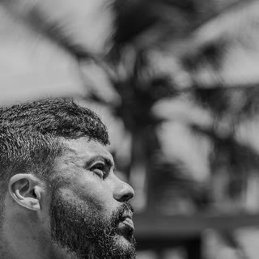
"Formado em Ciências Contábeis, sem nenhuma bagagem ambiental. Fechou 51% do edital, 83% de aproveitamento na objetiva e gabaritou a redação na prova."
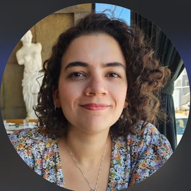
"Formada em Direito e Arquitetura, começou a estudar a área ambiental cerca de três semanas depois do edital. Foi de nota baixa a 30/30 na redação de Fiscal."
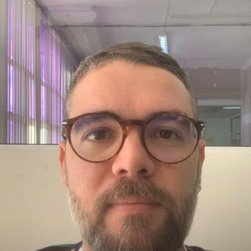
"Já tinha batido na trave em dois concursos anteriores por causa da nota mínima na discursiva. 87,5% de aproveitamento em mais de mil questões resolvidas."
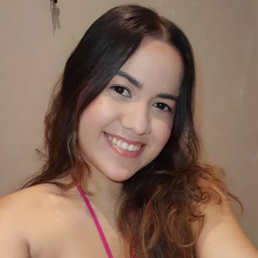
"Fechou quase 50% do edital com 85% de aproveitamento. 'Eu senti uma leveza', foi a frase dela sobre sair do estudo por conta própria para um plano acompanhado."
"Entrou na mentoria já na reta final, poucas semanas antes da prova, com um plano focado no que ainda faltava fechar. 481 inscritos para 12 vagas imediatas."
Aprovação em concurso federal, na Universidade Federal do Acre, confirmada no resultado definitivo publicado pela banca.
Entrevistas completas, sem corte e sem roteiro. Cada uma responde a uma dúvida diferente de quem está pensando em entrar.

Entrou sem nenhuma bagagem ambiental e conta como construiu a base do zero.

Reprovou em dois concursos pela nota da discursiva e conta o que mudou na terceira tentativa.

Estudava por conta própria e conta o que mudou quando passou a seguir um plano.

Conta como encaixou a preparação na rotina que tinha, e não na rotina ideal.
Cada linha abaixo foi conferida no resultado publicado pela banca. Mostramos apenas o primeiro nome do nosso aluno — os demais candidatos das listas não aparecem aqui.
| Órgão | Cargo | Aluno | Resultado |
|---|---|---|---|
| CPRH/PEEstadual · Recife | Analista em Gestão Ambiental (Biologia) | Isadora | 1º lugar |
| IDEMA/RNEstadual | Fiscal Ambiental | Arianne | 2º lugar |
| Prefeitura de Planaltina/GOMunicipal | Fiscal Ambiental | Thalyssa | 2º lugarjá nomeada |
| IPAAM/AMEstadual | Analista Ambiental (Eng. Florestal) | André | 2º lugar |
| IDEMA/RNEstadual | Analista Ambiental (Arquitetura) | Arianne | 4º lugar |
| IDEMA/RNEstadual | Analista Ambiental (Geografia) | Daniel | 4º lugar |
| IDEMA/RNEstadual | Analista Ambiental (Eng. Florestal) | Luanna | 4º lugar |
| UFACFederal · Rio Branco | Técnico em Agropecuária | Sandra | 5º lugar |
| IDEMA/RNEstadual | Fiscal Ambiental | Lucemir | 5º lugar30º na ampla |
| SEMMAS Manaus/AMMunicipal | Analista Municipal II (Eng. Florestal) | Jhonatan | 8º lugar |
| SEMMAS Manaus/AMMunicipal | Analista Municipal II (Eng. Florestal) | André | 23º lugar |
Nomes borrados para preservar os alunos. Clique para ampliar. Arraste a faixa para o lado para ver todos.
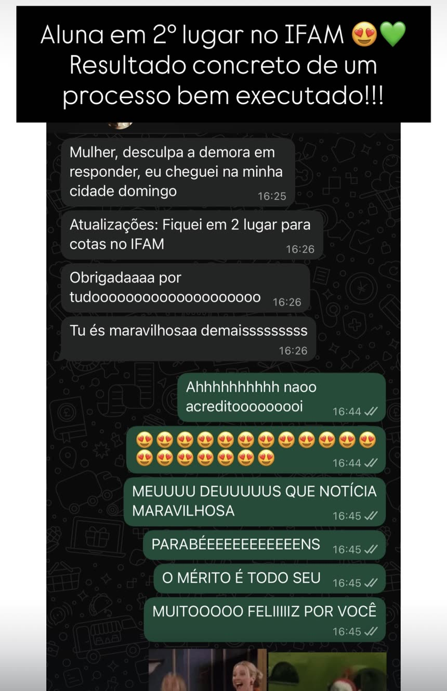
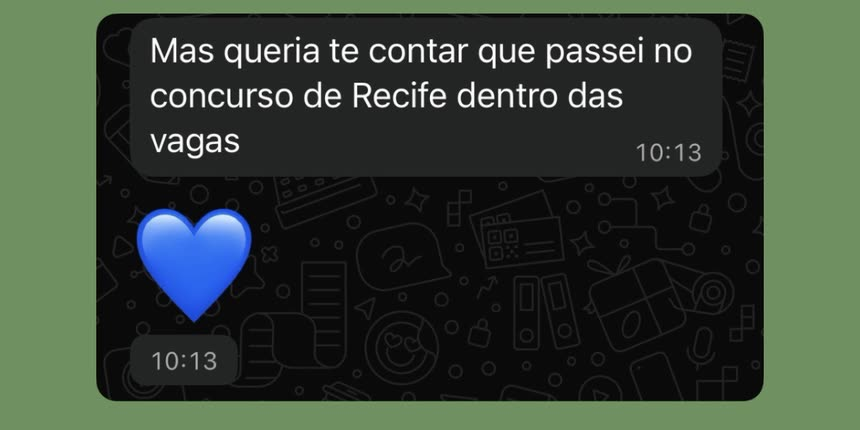
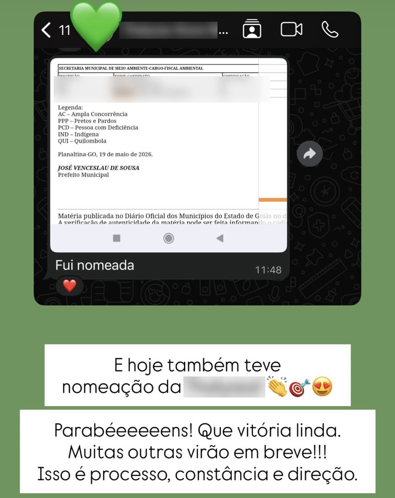
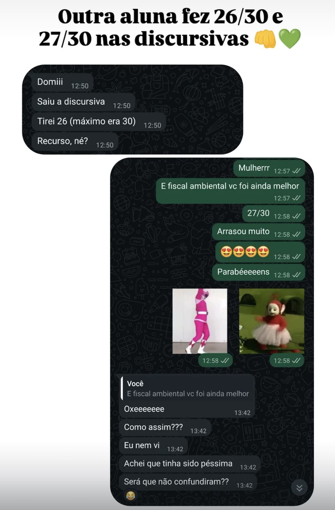
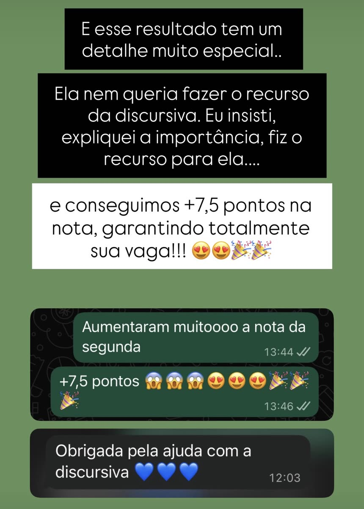
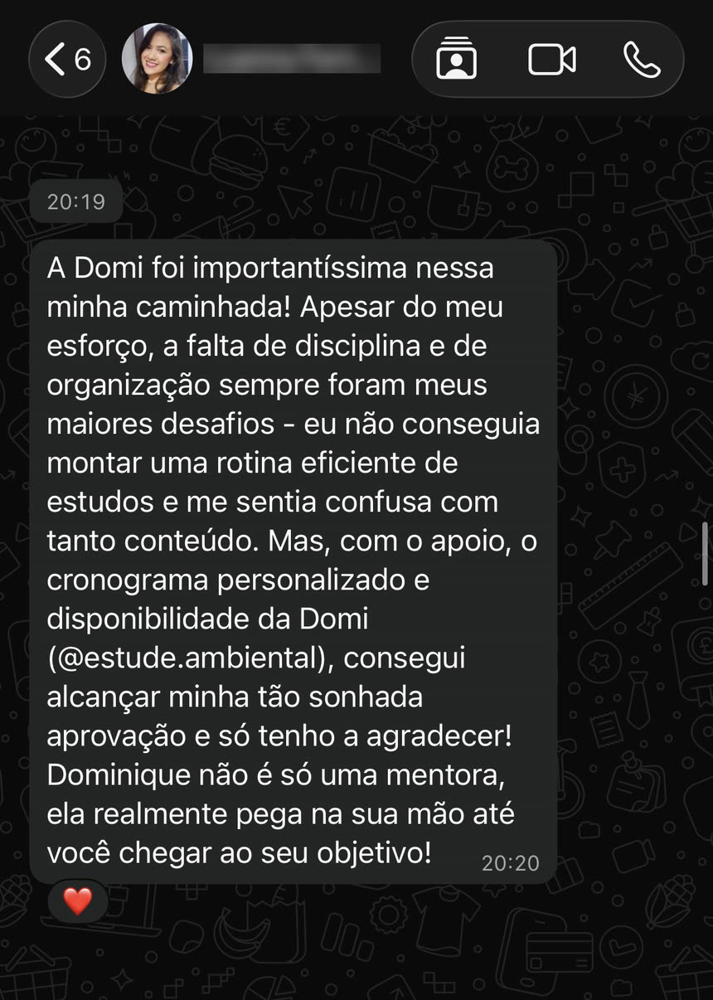
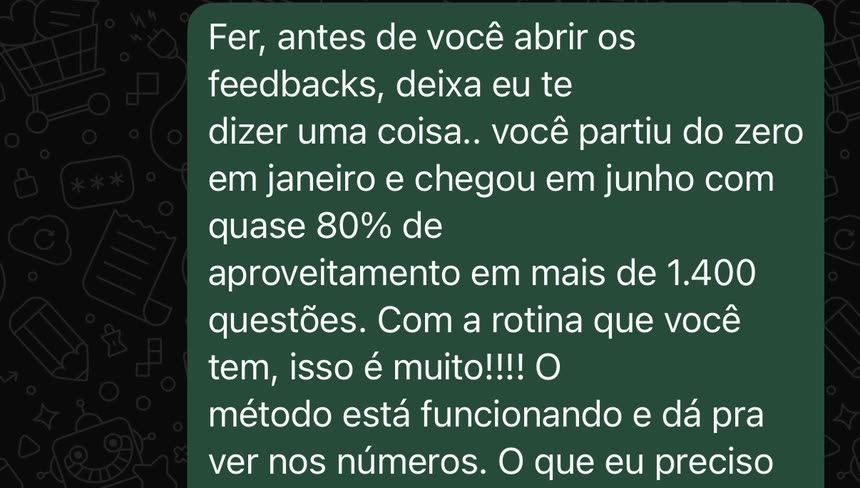
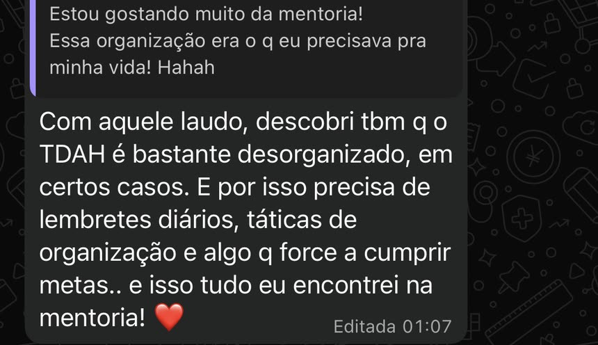
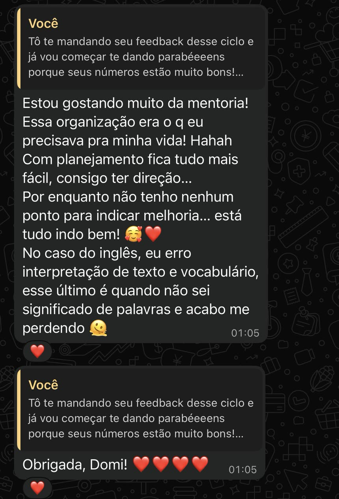
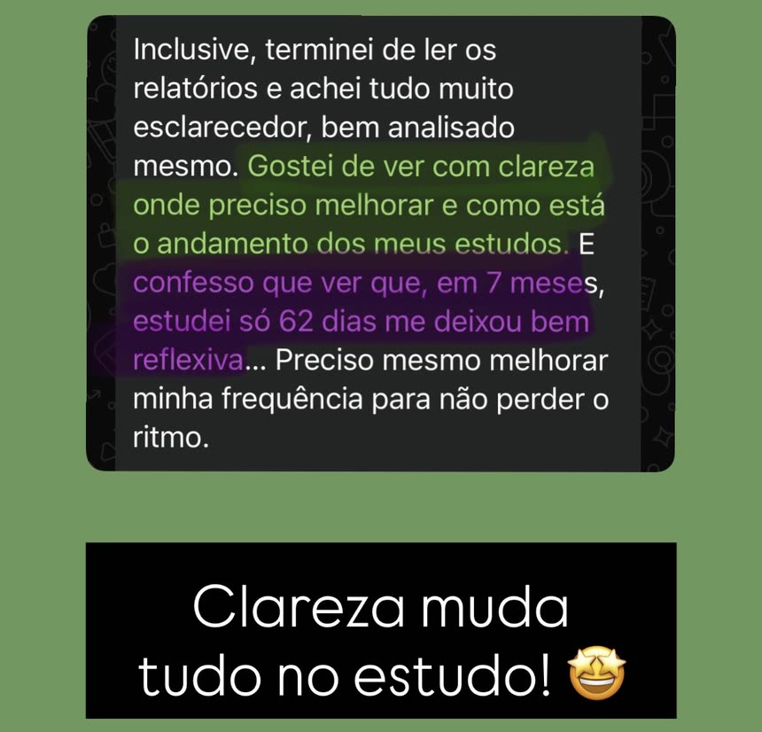
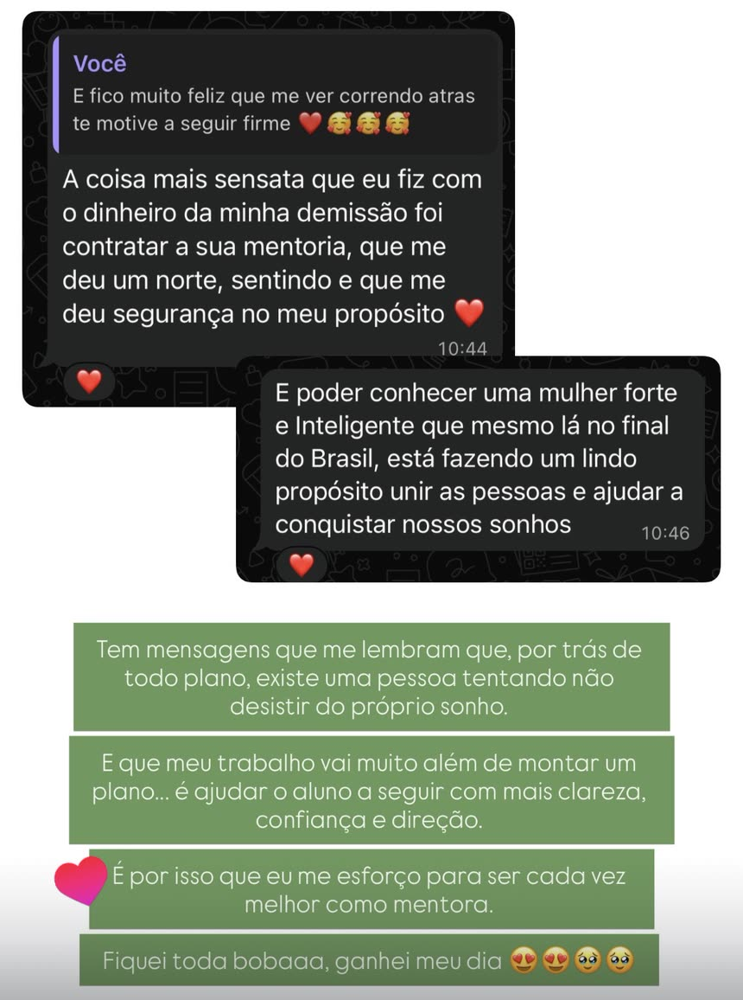
Ninguém é reprovado por falta de conteúdo disponível. É reprovado por falta de direção.
Dominique Martins SalaO Método TEIA organiza a preparação em quatro movimentos que se conectam. Você não recebe apenas uma lista de matérias: cada etapa alimenta a próxima e permite que o plano evolua junto com você.
Mapeamos seu momento: concurso e cargo de interesse, histórico de estudos, tempo disponível, materiais e desempenho. O edital é organizado em uma trilha de prioridades: você entende o que estudar primeiro, o que pode esperar e como distribuir o conteúdo ao longo do tempo.
o que mudaVocê para de decidir todo dia o que estudar. A ordem já está definida.
A estratégia sai do papel e vira execução. Você recebe metas diárias com indicação de fontes para o estudo teórico, revisões, questões e atividades adequadas à sua fase de preparação, e inicia o dia entendendo exatamente o que precisa cumprir.
o que mudaVocê abre a plataforma e executa, em vez de gastar energia planejando.
Nenhum planejamento continua perfeito por meses. A rotina muda, dificuldades aparecem, editais são publicados. Por isso o plano é acompanhado e ajustado: o que não funcionou é corrigido, o que deu resultado é reforçado.
o que mudaAtraso deixa de virar bola de neve. O plano se reorganiza e você continua.
Você precisa saber se está apenas cumprindo horas ou realmente evoluindo. Questões, simulados e relatórios ajudam a identificar falhas, acompanhar acertos e direcionar os próximos ciclos de estudo. Quem tem discursiva no edital ainda conta com guia de estudo e correção como bônus da mentoria.
o que mudaVocê chega na prova sabendo onde está forte e onde ainda não está.
Aprovada a sua aplicação, é assim que a mentoria começa — e em poucos dias você já está estudando com um plano de pé.
Conversamos sobre sua rotina, seu histórico, seu objetivo, o tempo que você tem e as dificuldades que mais atrapalham hoje.
Seu edital é organizado e transformado em uma sequência de estudo compatível com o seu momento — não um modelo genérico.
Você entra na plataforma com o plano já montado e aprende a usá-la: metas, registro de atividades, desempenho e o que fazer quando atrasar.
Você acompanha toda a sua preparação em um só lugar, numa plataforma exclusiva da mentoria. O objetivo não é criar mais uma obrigação, mas reduzir o número de decisões que você precisa tomar sozinho.
Visualize as tarefas previstas, conclua o que estudou e acompanhe o cumprimento do plano.
Sua semana já montada: o que estudar em cada dia, com as matérias distribuídas conforme o tempo que você tem.
Acompanhe horas estudadas, evolução por disciplina e onde seu desempenho precisa de mais atenção.
Registre e acompanhe a resolução de questões, os erros e a evolução por conteúdo.
Treine o formato da prova, organize seus envios e receba orientações para melhorar. Guia, simulados e correção de discursiva são bônus para quem tem essa fase no edital.
Quando algo sair do previsto, o plano é reorganizado — e você recebe o novo caminho, sem precisar remontar nada sozinho.
O edital extenso vira uma sequência de estudo que cabe na sua rotina — e que continua fazendo sentido quando a rotina muda.
O que fazer em cada dia de estudo, sem gastar energia decidindo — e com como saber se está funcionando.
A parte que você não consegue fazer sozinho: alguém olhando seus números e corrigindo a rota com você.
Todo aluno recebe exatamente o que está descrito acima, em qualquer plano. Entre os planos de 3, 6 e 12 meses muda o tempo de acompanhamento e o valor, nunca a entrega. Como o acompanhamento é individual, as vagas por período são limitadas.
Um biólogo, um engenheiro ambiental, um agrônomo e um oceanógrafo compartilham algumas disciplinas, mas não deveriam seguir a mesma preparação. O plano considera o edital, o cargo, a formação exigida, a banca e a fase do concurso.
A mentoria oferece direção, método e acompanhamento. A execução continua sendo responsabilidade do aluno.
A aplicação leva poucos minutos e não gera cobrança.

Eu sou Dominique Sala, engenheira ambiental, mestra em Engenharia Urbana, pós-graduada em Engenharia de Segurança do Trabalho e fundadora da Estude Ambiental.
Ao longo da minha trajetória, desenvolvi uma habilidade que se tornou a base da mentoria: pegar informações extensas e desorganizadas e transformá-las em caminhos claros, processos e ferramentas de execução.
Nos concursos ambientais, isso significa analisar editais, compreender as exigências de cada cargo, organizar conteúdos, estabelecer prioridades e transformar tudo isso em uma preparação que caiba na rotina do aluno.
Criei a Estude Ambiental porque percebi que muitos candidatos não precisavam apenas de mais aulas. Eles precisavam de alguém que os ajudasse a decidir o que fazer com todo o conteúdo disponível. Meu trabalho não é prometer um caminho fácil. É reduzir o improviso, orientar suas decisões e acompanhar a evolução da sua preparação.
Dominique Martins SalaFundadora da Estude Ambiental
Quando o edital sai, o relógio já está correndo — e ele corre contra quem começou naquele dia.
Esse intervalo serve para revisar, treinar questões da banca e ajustar o foco. Não serve para aprender do zero licenciamento, resíduos, unidades de conservação e legislação ambiental.
Muda a banca, muda o peso de cada tema, mas o núcleo da área ambiental é o mesmo. Quem já construiu essa base não recomeça a cada edital: só redistribui prioridades.
E quem passa quase nunca começou no mês da publicação. Começou meses antes, com uma base pronta esperando o edital chegar.
Concurso da área ambiental não abre todo mês. Deixar passar um edital por falta de preparo significa esperar o próximo — e ele pode levar anos para sair.
Não existe momento perfeito. Existe o momento em que você decide parar de estudar no escuro.
A entrega é a mesma nos três planos. O que muda entre 3, 6 e 12 meses é por quanto tempo você tem acompanhamento e o valor — qual faz sentido para o seu momento a gente define na conversa, depois da aplicação.
Quero aplicar para a MentoriaA aplicação não gera cobrança · Garantia de 7 dias · Vagas limitadas
Você entra, recebe o diagnóstico, vê o plano montado para o seu caso e acompanha como a mentoria funciona na prática. Se dentro de 7 dias corridos entender que não é para você, basta pedir o cancelamento: devolvemos 100% do valor pago, sem burocracia e sem letra miúda.
Esse é o direito de arrependimento previsto no artigo 49 do Código de Defesa do Consumidor, e está escrito no contrato da mentoria.
É garantia de satisfação com a mentoria, não de aprovação. A direção e o acompanhamento são meus; a execução continua sendo sua.
O acompanhamento é individual, então o número de alunos que entram por período é limitado. Se você quer construir uma preparação organizada para concursos da área ambiental, preencha a aplicação: suas respostas serão analisadas para entender seu momento e verificar se a Mentoria Estude Ambiental faz sentido para você.
Quero aplicar para a MentoriaA aplicação não garante uma vaga e não gera cobrança. Ela inicia a análise do seu momento e a continuidade do atendimento pelo WhatsApp.
Ao aplicar, você concorda com os Termos de Uso e com o Contrato de Prestação de Serviços da Mentoria.